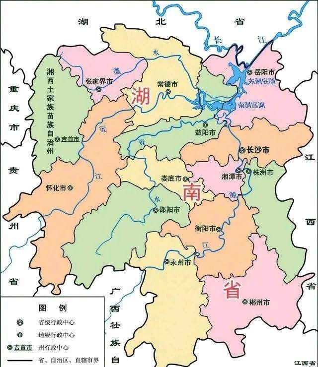

湖南省简称湘，是因地处洞庭湖以南而得名。战国时期湖南是楚国地域，唐代属江南道（后改江南西道），宋代属荆湖南北两路，元代属湖广行中书省，清代始称湖南省。 唐属江南西道和黔中道，后设湖南观察使，为湖南得名的开始；宋称湖南路；元设岭北湖南道；明属湖广省，后改省为湖广布政使司；清分湖广省置湖南省，省名至今未变。 唐代在洞庭湖以南，包括湘姿二水流域设湖南节度使，始出现湖南一名。宋置荆湖南路，简称湖南路。元明两代设湖南道。清代设置湖南省。
湖南为中华人民共和国省级行政区，地处中国中南部、长江中游南部，宋代划定为荆湖南路而开始简称湖南，省内最大河流湘江流贯南北而简称“湘”，也称潇湘，省会驻东北部的长沙市。湖南东临江西，西接重庆、贵州，南毗广东、广西，北与湖北相连。 湖南是华夏文明的重要发祥地之一，相传炎帝神农氏在此种植五谷、织麻为布、制作陶器，坐落于炎陵县西部的炎帝陵成为凝聚中华民族的精神象征；舜帝明德天下，足历洞庭，永州九嶷山为其陵寝之地。湖南自古盛植木芙蓉，五代时就有“秋风万里芙蓉国”之说，因此又有“芙蓉国”之称。
荷花（Lotus flower）：属毛茛目睡莲科，是莲属二种植物的通称。又名莲花、水芙蓉等。是莲属多年生水生草本花卉。地下茎长而肥厚，有长节，叶盾圆形。花期6至9月，单生于花梗顶端，花瓣多数，嵌生在花托穴内，有红、粉红、白、紫等色，或有彩纹、镶边。坚果椭圆形，种子卵形。
樟树是樟科常绿乔木。叶互生，卵形，上面光亮，下面稍灰白色，离基三出脉，脉腋有腺体。初夏开花，花小，黄绿色，圆锥花序。核果小球形，紫黑色，基部有杯状果托。植物全体均有樟脑香气，可提制樟脑和提取樟油。木材坚硬美观，宜制家具、箱子，又名绿化树、行道树，香味可驱害虫。
湖南东临江西，西接重庆、贵州，南毗广东、广西，北与湖北相连。土地面积21.18万平方公里，占中国国土面积的2.2%，在各省市区面积中居第10位。全省总人口6737.2万人（2014年）。辖14个地州市、122个县（市、区）。
湖南省位于江南，属于长江中游地区，地处东经108°47′～114°15′，，北以滨湖平原与湖北接壤。省界极端位置，东为桂东县黄连坪，西至新晃侗族自治县韭菜塘，南起江华瑶族自治县姑婆山，北达石门县壶瓶山。东西宽667公里，南北长774公里。
湖南地势属于云贵高原向江南丘陵和南岭山地向江汉平原的过渡地带。 湘西有海拔在1000-1500米之间山势雄伟的武陵山、雪峰山盘踞，是湖南省东西交通的屏障。雪峰山从城步苗族自治县至益阳境内是资水和沅水的分水岭，是湖南省东、西自然条件的分界线。 湘南有南岭山脉，峰顶海拔都在1000米以上，向东西方向延伸，是长江和珠江水系的分水岭，山间盆地较多，谷地为交通要道。 湘东有幕阜、连云、九岭、武功、万洋、诸广等山，海拔一般为500-1000米，均为东北—西南走向。湘中为海拔500米以下的丘陵，台地广布。这些盆地多为河谷沟通，并有河流冲积平地。 湘北为洞庭湖及湘、资、沅、澧四水尾闾的河湖冲积平原，海拔多在50米以下。 全省东、西、南三面山地环绕，逐渐向中部及东北部倾斜，形成向东北开口不对称的马蹄形。省内大于海拔2000米高点的分布与地势总特点基本一致，集中分布在东、南、西三面的山地之中。炎陵县的神农峰（酃峰）是省内地势的最高点，峰顶海拔2122.35米。东南部有桂东县的八面山，峰顶海拔2042米。湘南有道县的韭菜岭，峰顶海拔2009米。西南部有城步县的二宝鼎，峰顶海拔2024米。西北部有石门县的壶瓶山，峰顶海拔2099米。湖南地势的最低点，是临湘县的黄盖湖西岸，海拔只有24米，与省内最高点相差2000米左右。
湖南全省可划分为六个地貌区：湘西北山原山地区、湘西山地区、湘南丘山区、湘东山丘区、湘中丘陵区、湘北平原区。地貌按成因可分为：以流水地貌为主，占全省总面的64.76%，岩溶地貌次之，占25.97%；湖成地貌最小，仅占2.88%，水面积占6.39%。按组成物质（不含水域）分沉积岩（包括砂质岩、碳酸盐岩、红岩、第四纪松散堆积物）地貌为主，占全总总面积的57.75%；变质岩类地貌次之，占24.99%；岩浆岩类地貌，仅占8.87%。按海拔高度（含水域）分，以300米以下地貌为主，占全省总面积44.27%；300米到500米地貌次之，占22.58%；500-800米地貌占18.43%；800米以上地貌占11.72%。按形态分，山地（含山原）占全省总面积51.22%，丘陵占15.40%，岗地占13.87%，平原占13.11%，水面占6.39%。全省以山地和丘陵地貌为主，合占总面积的66.62%。
湖南省河网密布，流长5公里以上的河流5341条，总长度9万公里，其中流域面积在55000㎞²以上的大河11117条。省内除少数属珠江水系和赣江水系外，主要为湘、资、沅、澧四水及其支流，顺着地势由南向北汇入洞庭湖、长江，形成一个比较完整的洞庭湖水系。湘江是湖南最大的河流，也是长江七大支流之一；洞庭湖是湖南省最大的湖泊，跨湘、鄂两省。
湖南为大陆性亚热带季风湿润气候，气候具有三个特点：第一、光、热、水资源丰富，三者的高值又基本同步。第二，气候年内变化较大。冬寒冷而夏酷热，春温多变，秋温陡降，春夏多雨，秋冬干旱。气候的年际变化也较大。第三，气候垂直变化最明显的地带为三面环山的山地。尤以湘西与湘南山地更为显著。湖南年日照时数为1300-1800小时，湖南热量丰富。年气温高，年平均温度在15-18℃之间。湖南冬季处在冬季风控制下，而东南西三面环山，向北敞开的地貌特性，有利于冷空气的长驱直入，故一月平均温度多在4-7℃之间，湖南无霜期长达260-310天，大部分地区都在280-300天之间。年平均降水量在1200-1700毫米之间，雨量充沛，为我国雨水较多的省区之一。
湖南在原始社会时为三苗、百濮与扬越（百越一支）之地，据宁乡县、安乡县、津市、澧县、道县和平江县等地考古挖掘出土的文物证明，湖南境内在40万年前有旧石器时期的人类活动，早在一万多年前就有种植稻谷，早在五千年以前的新石器时代湖南的先民就开始过定居生活。 湖南在夏、商和西周时为荆州南境。 春秋、战国时代属于楚国苍梧，洞庭二郡。 秦始皇设黔中、长沙两郡； 西汉初期属于长沙国，汉武帝之后属荆州刺史辖区，辖武陵郡、桂阳郡、零陵郡和长沙郡； 三国时属吴国荆州，置昭陵郡，为荆南五郡； 西晋时分属荆州和广州；东晋时分属荆州、湘州、江州； 南朝宋、齐、梁时分属湘州、郢州和小部分荆州，南朝陈时分属荆州、沅州； 隋高祖开皇九年（589年）平南陈，而统一中国后，在湖南设长沙、武陵、沅陵、澧阳、巴陵、衡山、桂阳、零陵等八郡； 唐玄宗开元二十一年（733年）时分属山南东道、江南西道和黔中道、黔中道黔州都督府，唐代宗广德二年（764年）在衡州置湖南观察使，从此在中国行政区划史上开始“湖南”之名； 五代十国时期，马殷据湖南，建立楚国，国都为长沙。 宋朝分全国为路，路下设州、府、军、监，各辖若干县。湖南分属荆湖南路和荆湖北路。 元代实行行省制度。湖南属湖广行省，分14路3州：岳州路、常德路、澧州路、辰州路、沅州路、靖州路、天临路、衡州路、道州路、永州路、郴州路、宝庆路、武冈路、桂阳路、茶陵州、耒阳州、常宁州。元朝政府还在今湘西少数民族聚居地实行土司制度，置有10多个长官司或蛮夷长官司，分别隶属思州军民安抚司、新添葛蛮安抚司和四川行省永顺等处军民安抚司管辖。 明朝行省设布政使司，后改为承宣布政使司。省下为府（州），府下设县，实行省、府（州）、县三级制。湖南属湖广布政使司，辖地在今湖南境的有7府、2州、2司：岳州府、长沙府、常德府、衡州府、永州府、宝庆府、辰州府、郴州、靖州、永顺军民宣慰使司、保靖州军民宣慰使司。 清朝地方政权实行省、道、府（直隶厅、直隶州）、县（散厅、散州）四级制。康熙三年置湖广按察使司，湖广右布政使、偏沅巡抚均移驻长沙。湖广行省南北分治，湖南独立建省。长沙、衡州、永州、宝庆、辰州、常德、岳州7府，郴、靖2州由偏沅巡抚直接管辖。雍正二年，偏沅巡抚易名湖南巡抚。 中华民国时，湖南废除府、厅、州，保留道、县两级。民国三年（1914年）全省下设湘江、衡阳、辰沅、武陵四道。民国十一年（1922年）道制撤消，仅存省、县两级。民国二十六年（1937年）12月普遍设立行政督察专员公署，湖南省划为九区；1938年湖南省调整为10个行政督察区；1940年4月湖南省调整为10个行政督察区，各区辖6-10县不等，并成立长沙市（1933年）、衡阳市（1943年）两省辖市。 民国三十八年（1949年）国民政府退守台湾以前，湖南省有2市、10行政督察区、77县，湖南省政府驻长沙。此外，国内革命战争时期，1927年8月—1937年7月间，在中国共产党领导下，湖南省境的平江、浏阳、醴陵、岳阳、临湘、湘阴、长沙、酃县、茶陵、攸县、郴县、宜章、永兴、耒阳、资兴、桂东、汝城、安仁、桑植、永顺、龙山、大庸、石门、慈利、华容等25县建立了革命根据地，或者成为游击区，并成立县苏维埃政府，建立区苏维埃政府170多个，乡苏维埃政府或革命委员会910多个。省一级苏区政府，有1930年7月30日成立湖南省苏维埃政府；1930年10月成立湘鄂西省苏维埃政府；1931年7月，成立湘鄂赣省苏维埃政府（后改为湘鄂赣省工农兵苏维埃政府）；1931年10月成立湘赣省苏维埃政府；1934年11月成立湘鄂川黔省革命委员会，以上均行使省级革命政权的职能。 中华人民共和国成立以后，初期设置长沙（1949年）、株洲（1956年）两地级市，长沙、衡阳、郴县、常德、益阳、邵阳、永州7个直属专区，湘西行政区及所辖永顺、沅陵、会同3个专区。2002年末，湖南省共计划分为14个地区（13地级市和1自治州），122个县级行政区包括34个市辖区、16个县级市、65个县和7个自治县。 湖南在近代发生许多重要的历史事件。1852年，曾国藩受命在湘组建湘军，镇压太平天国。在1898年，湖南是唯一支持戊戌变法的省份。1899年和1904年，岳阳、长沙先后被开辟为商埠，常德、湘潭增列为“寄港地”。1903年，黄兴创立华兴会，成为同盟会和国民党的主要创始人之一。1926-1927年，北伐战争期间，湖南农民运动声势最为浩大，农会成员发展到600万人。1936年，粤汉铁路全线通车。抗日战争期间，中国军队在湖南省境进行过几次极其惨烈的抗击日军的战役，包括长沙会战、衡阳会战和常德会战等。
根据2012年9月湖南省国土资源厅编制的《湖南省矿产资源年报》，湖南是著名的“有色金属之乡”和“非金属矿之乡”。已发现各类矿产143种。37种矿产保有资源储量居中国前5位，62种矿产保有资源储量居中国前10位。其中，钨、锡、铋、锑、石煤、普通萤石、海泡石粘土、石榴子石、玻璃用白云岩等矿种的保有资源储量居中国之首，钒、重晶石、隐晶质石墨、陶粒页岩等矿种居中国第二，锰、锌、铅、汞、金刚石、水泥用灰岩、高岭土等矿种也在中国具有重要地位。
湖南省植物种类多样，群种丰富，是中国植物资源丰富的省份之一。主要树种有马尾松、杉、樟、檫、栲、青山栎、枫香以及竹类，此外有银杏、红豆杉、水杉、珙桐、黄衫、杜仲、伯乐树等60多种珍贵树种。
野生动物主要有华南虎、金钱豹、穿山甲、羚羊、白鳍豚、花面狸等。
湖南省内河网密布，水系发达，淡水面积达1.35万平方公里。湘北有洞庭湖，为中国第二大淡水湖。有湘江、资水、沅水和澧水等4大水系，分别从西南向东北流入洞庭湖，经城陵矶注入长江。5公里以上河流5341条，河流可通航里程1.5万公里，内河航线贯通95%的县市和30%以上的乡镇。多年平均降水量1450毫米，湖南省水资源总量1689亿立方米，人均占有水资源量2500立方米，水资源相对较丰富。
截至2024年1月，湖南省辖14个地州市、122个县（市、区）。
全省常住人口为65683722人，同第五次全国人口普查2000年11月1日零时的64395273人相比，十年共增加1288449人，增长2%。年平均增长率为0.2%。全省户籍人口为70780918人。 截至2014年末，湖南省常住人口为6737.2万人。其中，城镇人口3320.1万人，城镇化率49.28%。全年出生人口90.8万人，出生率13.52‰；死亡人口46.3万人，死亡率6.89‰；人口自然增长率6.63‰。
湖南是多民族省份，共有汉族、土家族、苗族、瑶族、侗族、白族、回族等55个民族。其中世居的有汉、苗、土家、侗、瑶、回、壮、白族等9个民族，世居少数民族大多数居住在湘西、湘南和湘东山区。少数民族人口共680万人，占湖南省总人口的10%左右，大多聚居在湘西和湘南山区，少数杂居在湖南省各地。在少数民族中，苗族和土家族人口最多，主要分布于湘西北，建立有湘西土家族苗族自治州。